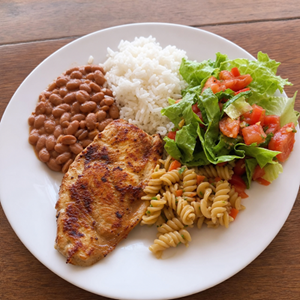

Projeto Prato Cheio

Atuação na arrecadação, organização e distribuição de refeições e cestas básicas para famílias em situação de vulnerabilidade.
- Perfis necessários: Auxiliar de cozinha, motorista e organizador de logística.
- Disponibilidade: Aos sábados, das 08h às 12h.